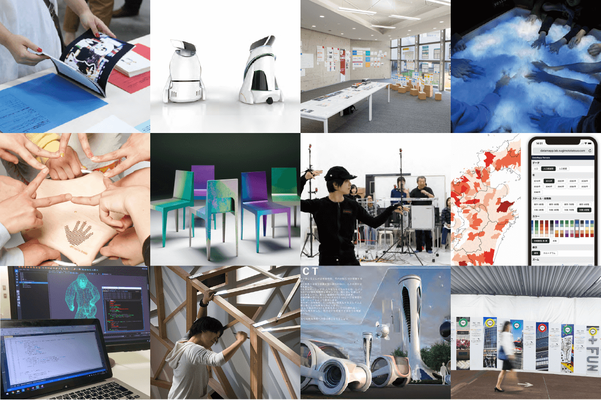

ABOUT
学科紹介工学の基盤と文化的基盤の統合から生まれる新しい研究

システムデザイン研究科インダストリアルアート学域では、これまでの工学的かつ文化的な基盤をひとつにすることで、現代社会の新たなデザイン·アート領域の研究者や創造·研究·実践の担い手の育成を、「プロダクトデザイン」と「メディア創生」の2つの研究分野から図っています。「プロダクトデザイン」は、交通機関、家電製品、工業製品、家具、住空間、公共空間などのデザインや人間工学など、人と環境の双方からのアプローチでものづくりを展開しています。「メディア創生」は、グラフィック、先端メディア、テクノロジーおよびデザイン、アートにかかわる革新的なモノやコトを創出しています。
2つのコア・分野、12のスタジオによる構成
インダストリアルアート学科・学域は、「プロダクトデザイン」と「メディア創生」の2つのコア・分野を柱に、12のスタジオで構成されています。各スタジオが扱う専門領域は新しいものづくりと情報メディアにまたがって多様に連携しながら、それぞれが最先端の研究を推進し、新しい価値の創造を展開していきます。
現代社会が求める幅広い知見をもったデザイナーの育成

本学科·学域は、理工系学部·研究科の中にあるデザインコースとして、またプロダクト系とメディア系の幅広いデザイン分野が共存する学科として世界的にも非常にユニークな存在といえます。この特色を最大限活かし、美術系大学など他大学のデザイン系学科とは一線を画した独自の人材を育成します。デザインとはただ形を作るにとどまらず、コンセプト提案、しくみ構築機能の調整統合など、新しいモノやコトを生み出す作業における上流段階での重要な役割を担うものであるとの位置づけから、デザイナーには専門職的なアプローチのみならず、ものづくりの指揮官の役割が社会から期待されるようになっています。このような社会の要請に応えられる新しいタイプのデザイナーおよびそれに関わる研究者の育成を目指します。そのために、学生には専門分野だけにとどまらず、学科の特色を活かし、理工系から人文·社会系まで、プロダクト系からメディア系まで、幅広い領域に対する興味と知見を有し、それらを総動員して新しいタイプのデザインを創生する人材を育成します。教育体制は、学部の4年間でさまざまな幅広い分野の学問や知見を吸収し、大学院でその幅の広さを活かしながら専門性を高めて深化させていきます。
履修モデル


受験情報
受験科目など、受験に関する情報は、大学公式サイトの学科ページ、および学部入試情報をご確認ください。